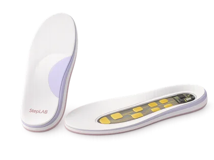
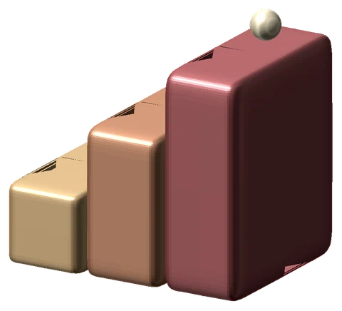

洞察INSIGHT
你们如何发现并理解用户需求，或是他们眼下遇到的痛点？

一个想法，如何走下去？
你们如何发现并理解用户需求，或是他们眼下遇到的痛点？
你们如何将最初的想法转化为真正有价值的产品或服务？
在这个过程中，你们如何联系团队成员、用户和外部资源，一起推动项目发展？
如果打算把项目继续做下去，你们下一步准备怎么做？
如何让项目从最小可行产品（MVP）走向持续发展？
(have fun exploring)
 01.VibeBlock
01.VibeBlockVibeBlock 把独立创作者的作品排成一条可以逛的虚拟街区。每个人都有自己的小店，来访者可以随意走进一家，看看最近上架了什么。
一杯饮品卖得便宜，总部和加盟商各自怎么赚钱？团队沿着一杯饮品的供应链，拆开总部供货、门店经营和消费者购买之间的关系。
 03.CharacterOS
03.CharacterOSCharacterOS 是一个面向剧情驱动型游戏研发团队的剧情研发顾问服务项目，关注版本更新中角色设定、知情时间、世界规则与剧情分支难以保持一致的问题。团队基于多方向探索、访谈和167份用户问卷汇总，将现阶段重点收敛到B端服务。
项目计划通过“AI初筛风险—顾问结合上下文复核—研发团队决定修改—改稿后复检”，形成包含问题位置、冲突依据、关联内容和修改建议的评审报告，以及改后的复检记录。
 04.StepMate
04.StepMate输入考试日期和手头的资料，StepMate 会把备考内容拆成每日任务，用剧情推进串起一段倒计时里的学习过程。
 05.移动3D打印机器人
05.移动3D打印机器人汽车改装件尺寸大、批量小，怎样制造才合算？团队走访杭州汽车城，并了解车队的气动件需求，由此提出用移动机器人进行 3D 打印的方案。
 06.ESG供应链减碳咨询项目
06.ESG供应链减碳咨询项目以一家时尚企业的供应链为案例，项目从排放数据缺口出发，设计了分三年推进的减碳方案。
 07.一朵云 Cloud Fly
07.一朵云 Cloud Fly下班回家，怎样让安静的房间里多一点回应？「一朵云」构想了一件会慢慢飘近、偶尔与你互动的云形陪伴装置。


08.StepLAB 儿童智能步态监测鞋垫鞋底为什么总在一侧先磨损？StepLAB 把监测放进儿童鞋垫，尝试连续记录脚下受力和步态的变化。

09.ABC供应商分层赋能策略分析面对供应链中的减碳压力，供应商的规模和改造能力并不相同。项目以一家时尚企业为例，提出分层支持不同供应商的方案。